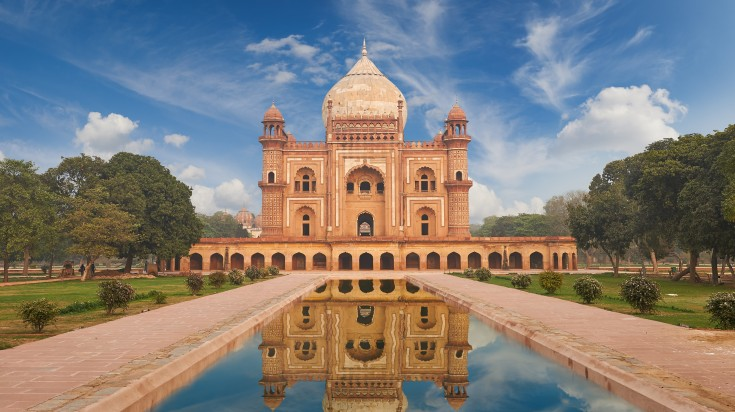
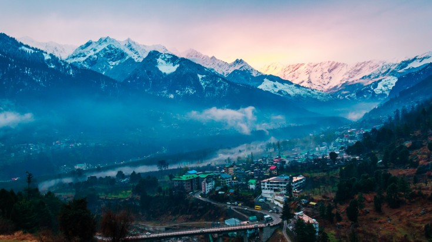

1` 1QS `A QXXXXXXXXXXXXXXXXXXXXXXXXXXXXXXX
Images and using div tag
Hawa Mehal

A stunning pick and red sandstone five-story structure stands in the heart of Jaipur.
One of the city’s most popular tourist attractions, the Hawa Mahal has a unique purpose.
as the Palace of the Wind, it was a place could view street activities outside while hidden from view.
To this end, the pyramid-shaped palace has 953 windows, each with an intricate design.
Constructed in 1799, Hawa Mahal is considered an excellent example of Rajputana architecture.
HUMAYUN TOMB

One of the most popular tourist destinations in India,
the massive capital city of Delhi is a merging of both old and new.
A visit to Old Delhi feels like stepping into a time machine with its ancient Mughal architecture,
laborers carrying spices, and rustic bazaars. In stark contrast,
modern New Delhi boasts of colonial-era parliament buildings, skyscrapers, and
upscale malls. The city is a cornucopia of cuisine, craft, and history, with
countless activities to keep you entertained. Gorge on street food, visit Humayun’s Tomb,
explore the Red Fort, or shop for Indian crafts in flea markets like Janpath and Sarojini Nagar.
It’s easy to lose yourself in this city, both literally and figuratively!
MANALI HILLS

Manali, one of the most well-known hill stations in India, is located in the state of Himachal Pradesh.
Often touted as the “gateway to adventure”, this high-altitude Himalayan town provides splendid access
to Hampta Pass for trekkers and Solang Valley for skiers. It is also a popular jump-off point for rafting,
mountaineering, and paragliding. The city provides a humble range of attractions that are still worth
the visit — explore the magnificent 500-year old Naggar Castle, gawk over the extremely
picturesque surroundings of the Solang Valley, reflect on life at the revered Manu Temple,
and hob-nob with the locals at the little eateries of Old Manal.